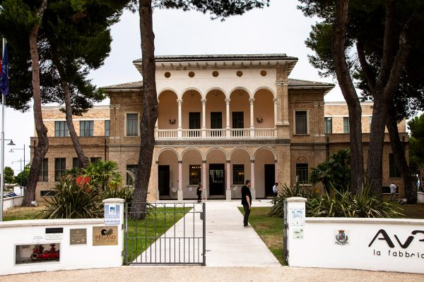
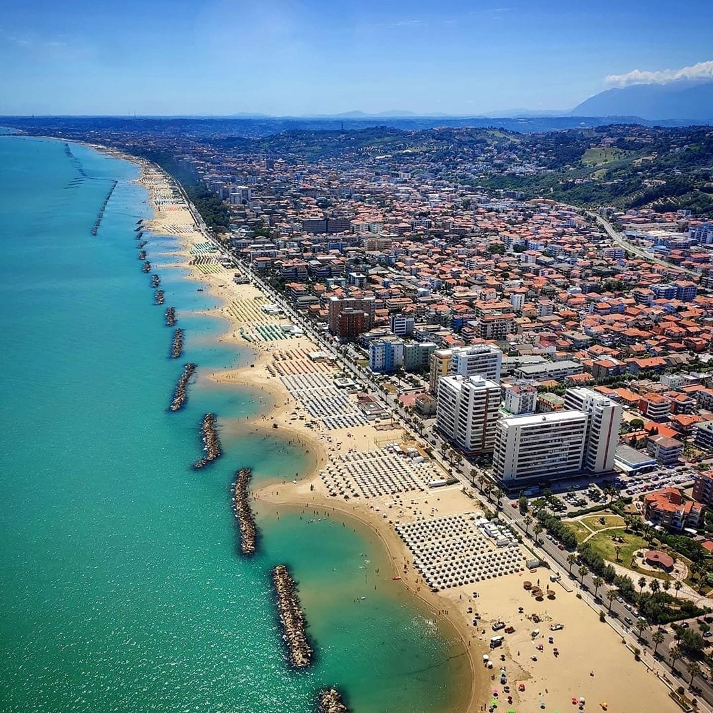

The venue
A glimpse of the location
Pescara — a lively Adriatic city where sea, culture, and innovation come together in the heart of Italy

The Aurum, Pescara — historic venue of the event

Where the Adriatic begins — Pescara's marina, a gateway between land and open sea.
A city that looks forward — modern skyline, ancient river, mountains always in sight.

Miles of golden sand, turquoise water, and a city that lives by the sea.
When the sun sets, Pescara lights up — and the river becomes the heart of the city